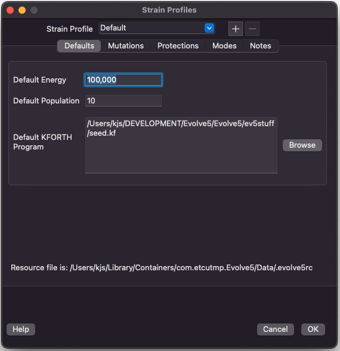
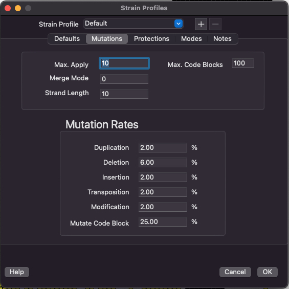
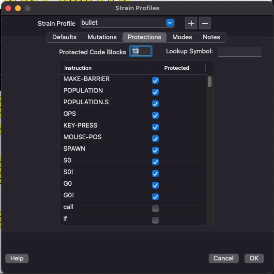
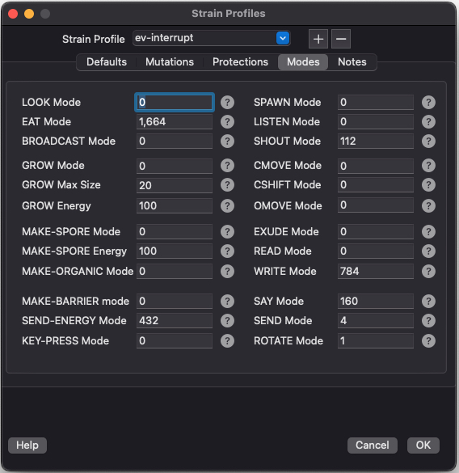
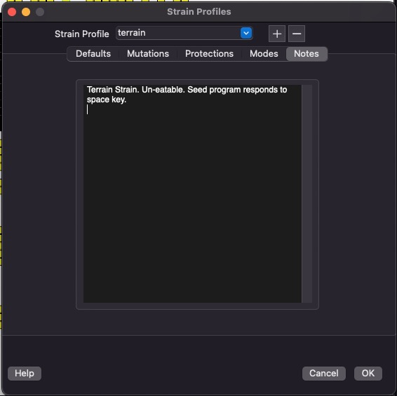
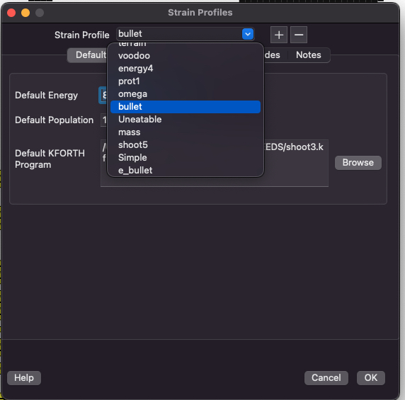

VOLVE 5.0
VOLVE 5.0
Strain Profiles Dialog
This dialog lets you create Strains, Edit Strains, Copy/Delete, Strains. This tab lets you change the default seed program, and other properties.
Resource File: shows the complete path to the .evolve5rc file. This file contains all the strain profiles. The file has this format.
This tab lets you customize the mutation rates for this strain profile.
Detailed information about these mutations available here.
This tab lets you customize the protected instructions and protected code blocks.
Protections are explained here.
Lookup Symbol: This field allows you to lookup a symbol in the Default KFORTH Program and place its code block number into the Protected Code Blocks field.
This is handy when you are developing a new program. It is annoying to constantly count code block numbers to just set the protections.
This tab lets you customize the behavior of many important instructions.
Detailed information about these modes available here.
This tab lets you provide a description for your strain.
Behold! Look at all the wonderous strains you can choose from:
-
Add Strain Profile:
Click on [+] button. The strain profile which is currently being vieweed will be cloned. Enter a name for the strain which is being added. -
Delete Strain Profile:
Click on [-] button. The strain profile which is currently being viewed will be deleted. The 'Default' strain cannot be deleted. -
Rename Strain Profile:
There is no rename function. But you can copy the strain profile you want to rename. Enter the new name when prompted. Then as a second step, delete the original profile. Whala!!! Renaming has occured.